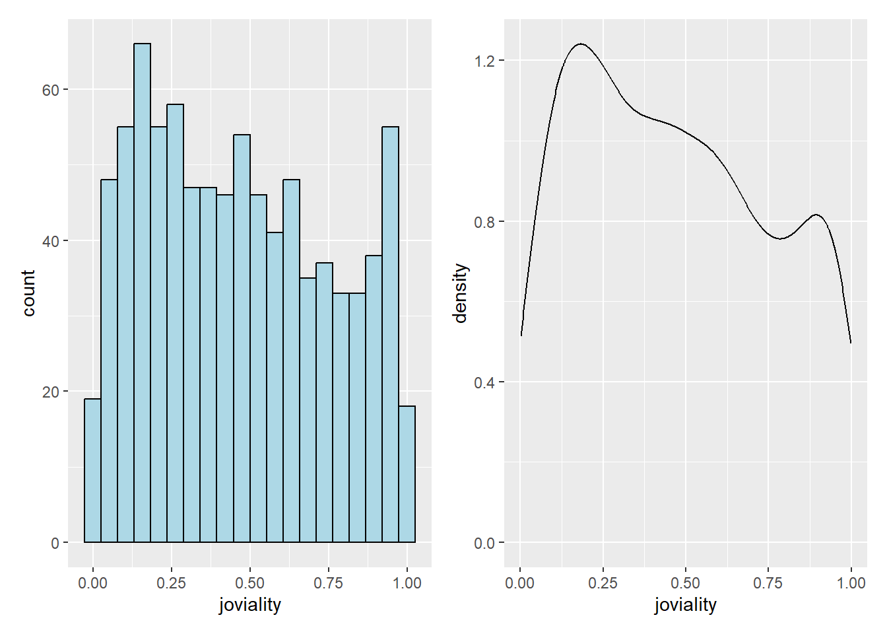

Show the code
pacman::p_load(tidyverse, ggplot2,plotly, ggdist, ggridges, ggthemes, colorspace, ggstatsplot, patchwork, ggrepel)Visual Anlytics of Demographics and Financial Characteristics of the Residents in the City of Engagement to Aid Revitalization Grant Allocation
City of Engagement, with a total population of 50,000, is a small city located at Country of Nowhere. The city serves as a service centre of an agriculture region surrounding the city. The main agriculture of the region is fruit farms and vineyards. The local council of the city is in the process of preparing the Local Plan 2023. A sample survey of 1000 representative residents had been conducted to collect data related to their household demographic and spending patterns, among other things. The city aims to use the data to assist with their major community revitalization efforts, including how to allocate a very large city renewal grant they have recently received.
The following analysis on the sample survey to reveal the demographic and financial characteristics of the city of Engagement by using appropriate static and interactive statistical graphics methods. This analysis will be showing user-friendly and interactive solution that helps city managers and planners to explore the complex data in an engaging way and reveal hidden patterns.
pacman::p_load(tidyverse, ggplot2,plotly, ggdist, ggridges, ggthemes, colorspace, ggstatsplot, patchwork, ggrepel)Import and check the columns in the participant dataset.
Participants <- read_csv("data/participants.csv") %>%
mutate_if(is.character, as.factor)
glimpse(Participants)Rows: 1,011
Columns: 7
$ participantId <dbl> 0, 1, 2, 3, 4, 5, 6, 7, 8, 9, 10, 11, 12, 13, 14, 15, 1…
$ householdSize <dbl> 3, 3, 3, 3, 3, 3, 3, 3, 3, 3, 3, 3, 3, 3, 3, 3, 3, 3, 3…
$ haveKids <lgl> TRUE, TRUE, TRUE, TRUE, TRUE, TRUE, TRUE, TRUE, TRUE, T…
$ age <dbl> 36, 25, 35, 21, 43, 32, 26, 27, 20, 35, 48, 27, 34, 18,…
$ educationLevel <fct> HighSchoolOrCollege, HighSchoolOrCollege, HighSchoolOrC…
$ interestGroup <fct> H, B, A, I, H, D, I, A, G, D, D, F, D, J, H, I, J, I, I…
$ joviality <dbl> 0.001626703, 0.328086500, 0.393469590, 0.138063446, 0.8…Participants$age_group <- cut(Participants$age,
breaks = c(-Inf,21, 26, 31, 36, 41, 46, 51, 56, Inf),
labels = c("<20", "21-25", "26-30","31-35", "36-40",
"41-45", "46-50","51-55", "56-60"),
right = FALSE)
Participants$age <- NULLImport and read the FinancialJournal Dataset, extract out Category to match the participants to be columns.
FinancialJournal <- read_csv("data/FinancialJournal.csv") %>%
mutate_if(is.character, as.factor)
Fin_by_cat <- FinancialJournal %>%
mutate(date = as.Date(timestamp)) %>%
group_by(participantId, category, timestamp) %>%
summarize(amount = sum(amount)) %>%
pivot_wider(names_from = category, values_from = amount)Extract the month_year out of timestamp.
Fin_split_ym <- Fin_by_cat %>%
mutate(
Date = as.Date(timestamp),
Month_Yr = format(Date, "%Y-%m")) As some participants have rent adjustment, new column is created, AdjustedShelter, to see the actual expense on shelter. Summarized the expenses by categories and group by Month_Yr, included two columns of Total Expense and Total Savings for later use.
Fin_summ <- Fin_split_ym %>%
group_by(participantId, Month_Yr) %>%
summarize(
Education = sum(Education, na.rm = TRUE),
Food = sum(Food, na.rm = TRUE),
Recreation = sum(Recreation, na.rm = TRUE),
Shelter = sum(Shelter, na.rm = TRUE),
Wage = sum(Wage, na.rm = TRUE),
RentAdjustment = sum(RentAdjustment, na.rm = TRUE),
) %>%
ungroup()%>%
mutate(
AdjustedShelter = Shelter + RentAdjustment,
TotalExpense = Food + Recreation + AdjustedShelter + Education,
TotalSavings = Wage + TotalExpense)
Fin_summ$Education <- abs(Fin_summ$Education)
Fin_summ$Food <- abs(Fin_summ$Food)
Fin_summ$Recreation <- abs(Fin_summ$Recreation)
Fin_summ$AdjustedShelter <- abs(Fin_summ$AdjustedShelter)
Fin_summ$TotalExpense <- abs(Fin_summ$TotalExpense)Join the two tables and remove the irrelevant columns for analysis and visualization later.
#Joined
Merged_table <- Fin_summ %>%
left_join(Participants, by = "participantId")
Merged_table$RentAdjustment <- NULL
Merged_table$Shelter <- NULLCheck for any missing values.
any(is.na(Merged_table))[1] FALSESummary of the statistics of the merged_table
psych::describe(Merged_table) vars n mean sd median trimmed mad min
participantId 1 10691 483.30 294.17 466.00 477.84 370.65 0.0
Month_Yr* 2 10691 6.43 3.48 6.00 6.43 4.45 1.0
Education 3 10691 14.44 29.89 0.00 6.63 0.00 0.0
Food 4 10691 346.41 85.25 308.58 342.51 67.67 32.0
Recreation 5 10691 387.55 249.97 377.40 373.71 201.59 0.0
Wage 6 10691 4265.05 2436.30 3613.88 3867.84 1786.00 1600.0
AdjustedShelter 7 10691 678.34 302.40 668.99 645.24 236.68 0.0
TotalExpense 8 10691 1426.74 518.11 1402.26 1399.42 386.64 32.0
TotalSavings 9 10691 2838.31 2426.81 2268.65 2442.49 1824.90 -362.7
householdSize 10 10691 1.90 0.81 2.00 1.88 1.48 1.0
haveKids 11 10691 NaN NA NA NaN NA Inf
educationLevel* 12 10691 2.35 0.94 3.00 2.36 1.48 1.0
interestGroup* 13 10691 5.59 2.90 6.00 5.61 4.45 1.0
joviality 14 10691 0.47 0.29 0.45 0.46 0.35 0.0
age_group* 15 10691 5.21 2.49 5.00 5.23 2.97 1.0
max range skew kurtosis se
participantId 1010.00 1010.00 0.13 -1.17 2.85
Month_Yr* 12.00 11.00 0.01 -1.23 0.03
Education 182.29 182.29 2.51 7.00 0.29
Food 590.42 558.42 0.13 0.41 0.82
Recreation 1962.10 1962.10 0.90 2.50 2.42
Wage 21334.65 19734.65 1.95 5.24 23.56
AdjustedShelter 3112.71 3112.71 1.50 5.11 2.92
TotalExpense 4894.27 4862.28 0.98 3.46 5.01
TotalSavings 19161.58 19524.28 1.96 5.27 23.47
householdSize 3.00 2.00 0.18 -1.44 0.01
haveKids -Inf -Inf NA NA NA
educationLevel* 4.00 3.00 -0.28 -1.14 0.01
interestGroup* 10.00 9.00 -0.05 -1.24 0.03
joviality 1.00 1.00 0.21 -1.15 0.00
age_group* 9.00 8.00 -0.06 -1.18 0.02Fin_byparticipant <- Fin_summ %>%
group_by(participantId) %>%
summarize(
Education = sum(Education, na.rm = TRUE),
Food = sum(Food, na.rm = TRUE),
Recreation = sum(Recreation, na.rm = TRUE),
Wage = sum(Wage, na.rm = TRUE),
AdjustedShelter = sum(AdjustedShelter, na.rm = TRUE),
TotalExpense = sum (TotalExpense, na.rm = TRUE),
TotalSavings = sum(TotalSavings, na.rm = TRUE)
)
Merged_table2 <- Fin_byparticipant %>%
inner_join(Participants, by = "participantId")ggplot(data=Merged_table2,
aes(y = joviality,
x= haveKids)) +
geom_boxplot()+
geom_point(position="jitter",
size = 0.5) +
stat_summary(geom = "point",
fun.y="mean",
colour ="red",
size=4) +
stat_summary(aes(label = round(after_stat(y), 2)), fun=mean, geom = "label_repel", size=3, angle=150)
ggplot(Merged_table2,
aes(x = joviality,
y = educationLevel,
fill = stat(x))) +
geom_density_ridges_gradient(
scale = 2,
rel_min_height = 0.01,
fill = lighten("#7097BB", .3),
color = "white") +
scale_x_continuous(
name = "Joviality Scores",
expand = c(0, 0)
) +
scale_y_discrete(name = NULL, expand = expansion(add = c(0.2, 2.6))) +
theme_ridges() +
facet_wrap(~ haveKids, nrow = 1)ggplot(data=Merged_table2,
aes(y = joviality, x= age_group)) +
geom_boxplot() +
stat_summary(geom = "point",
fun="mean",
colour ="red",
size=2) +
stat_summary(aes(label = round(after_stat(y), 2)), fun=mean, geom = "label_repel", size=3, angle=150) +
facet_grid(haveKids ~.) +
labs(y= 'Joviality', x= 'Age Group',
title = "Distribution of Joviality across Age Groups by Kids Status") +
theme(axis.title.y= element_text(angle=0), axis.ticks.x= element_blank(),
axis.line= element_line(color= 'grey'))
From the figure below, we can see that, joviality is directly correlated to TotalExpense and Recreation while negatively correlated with TotalSavings and Wage.
ggstatsplot::ggcorrmat(
data = Merged_table2,
cor.vars = c(2:8,13),
ggcorrplot.args = list(outline.color = "black",
hc.order = TRUE,
tl.cex = 10),
title = "Correlogram for Merged_table2 dataset",
subtitle = "Four pairs are no significant at p < 0.05"
)